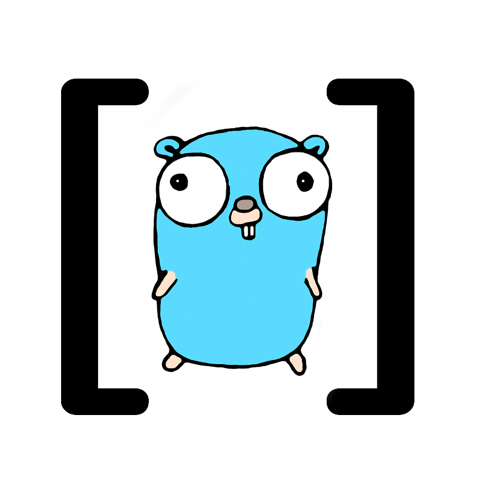

Data Science and Machine Learning in Go
Kent English
http://zeroviscosity.com
@kentenglish
Senior Software Engineer at Uncharted Software
R vs Python
Powerful but...
How about Go?
gophernotes
Go on the Jupyter Notebook
gonum
Linear algebra (LAPACK/BLAS), stats, matrix, graph, plotting, optimization, etc.
GoLearn
ML for Go: clustering, linear/logistic regression, random forest, etc.
TensorFlow

Numerical computation using data flow graphs
Go bindings are in the works but not yet stable
Glow
Easy-to-use distributed computation system written in Go
Gleam
Distributed map/reduce system written in Go and LuaJIT
gRPC
RPC with Protocol Buffers
Also...
Caveats
- Early days
- Lack of libraries
However...
Enthusiastic and prolific community
Resources
- #data-science on Gopher Slack
- GopherDS Resources - curated lists of blogs, conferences, tooling, packages, etc.